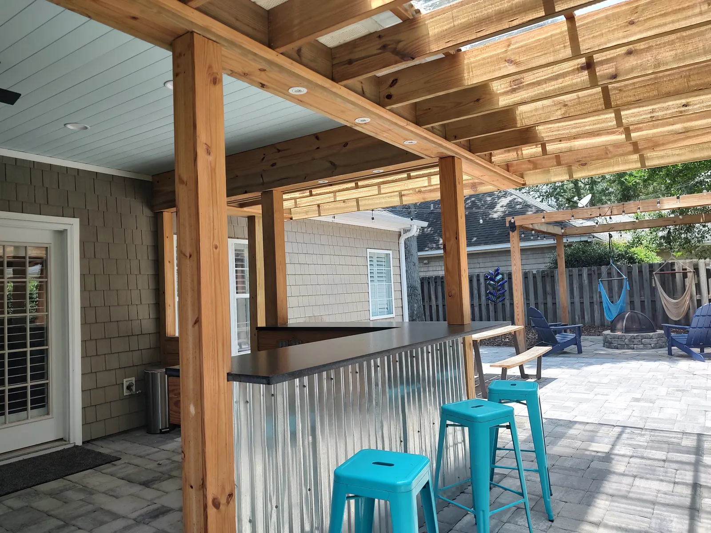
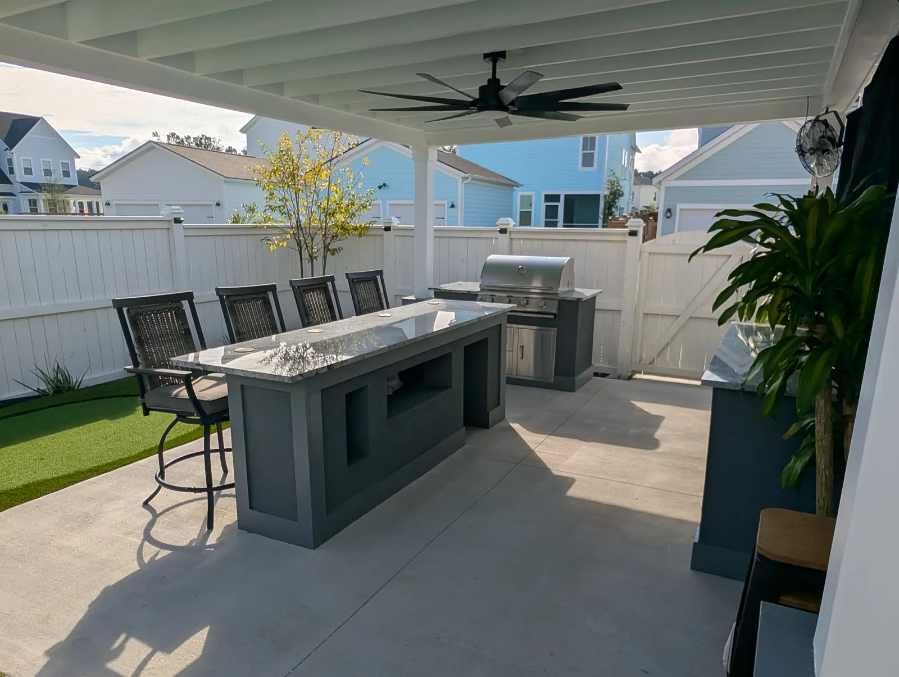
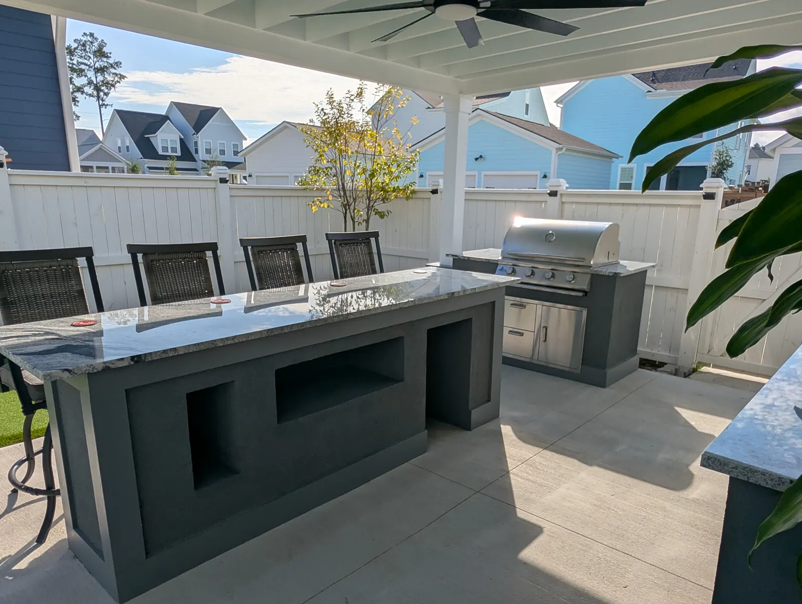
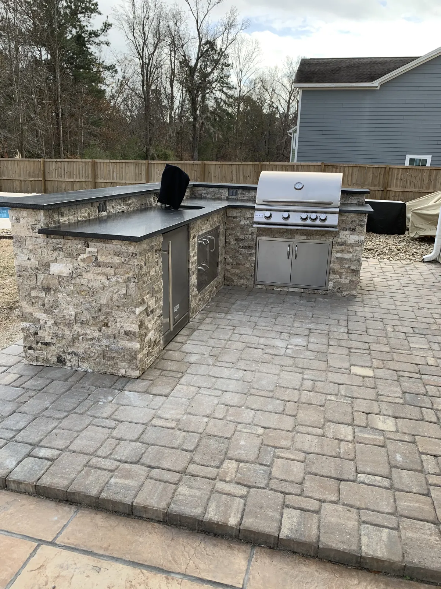
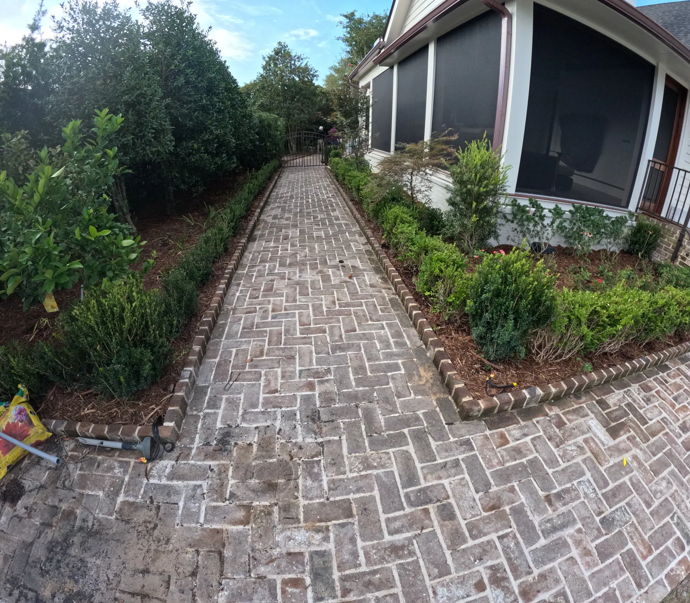

Sullivan’s Island, SC Custom Coastal Landscapes
Landscaping Sullivan’s Island, SC


Designed For Coastal Living
Sullivan’s Island is a unique landscape—salt air, high winds, sandy soils, and strict design requirements make it unlike any other environment in the Charleston region. That’s why Cramers Landscaping uses climate-specific design techniques and materials that blend luxury, longevity, and local compliance.
We understand how to work with:
- Salt-tolerant trees, shrubs, and grasses
- High water tables and flooding concerns
- Elevated homes and sloped lots
- Erosion-prone properties
- HOA and town-specific landscaping guidelines
Our coastal landscapes not only survive but thrive—bringing long-term value to your home and lifestyle.
Full-Service Landscaping on Sullivan’s Island
We offer a complete range of landscape and hardscape services, all designed to suit Sullivan’s Island’s aesthetic and environmental needs.Landscape Installation

We design and install premium plant beds, native coastal grasses, palm trees, and drought-tolerant ornamentals suited for oceanfront and inland properties.
Hardscape Installation

Elevate your home’s exterior with stone patios, walkways, retaining walls, and poolside hardscapes that withstand salt and sand while enhancing outdoor usability.
Irrigation Systems Installation

We install smart irrigation systems with salt-resistant components and weather-sensitive controllers to ensure your landscape receives just the right amount of water—no more, no less.
Drainage & Grading

Combat standing water and erosion with proper grading, French drains, and dry creek beds. Our team designs with both drainage and stormwater compliance in mind.
Pruning & Bed Care After Install

We are not a mowing company. For clients we have built large projects for, we come back to prune and shape the planting as it was designed to grow.
Mulch & Bed Edging

We use high-quality mulch that retains moisture, prevents erosion, and enhances aesthetics—installed with sharp bed lines and proper root zone coverage.
Site Structures

Our team builds pergolas, privacy fencing, and custom patio coverings to complement your home’s style and withstand salty breezes and sun exposure.
Ideal for Second Homes & Luxury Rentals
Many homeowners on Sullivan’s Island don’t reside here full-time—which means your landscaping needs to look great with minimal hands-on effort. We design for low upkeep in the first place, and we come back to prune and shape what we planted for clients whose projects we built.
We work with:
- Second homeowners
- Custom home builders
- Real estate agents preparing homes for sale

1 / 2 2 / 2
2 / 2Sullivan’s Island-Specific Landscaping Considerations

We’ve completed projects across all parts of Sullivan’s Island—from beachfront lots to marsh-front properties and elevated homes on interior streets. Each comes with unique challenges and code requirements.
Our local expertise allows us to:
- Design for FEMA compliance and stormwater drainage
- Recommend native plantings and avoid banned species
- Use materials that withstand salt corrosion
- Respect tree protection ordinances and setback rules
- Work in coordination with local landscape architects and surveyors
Whether you’re navigating design approvals or just need a high-end team that respects your property, we’re here to make it easy.
Popular Design Features On Sullivan’s Island
We frequently install:
- Elevated patios and paver pathways
- Coastal-themed plant beds with palms, grasses, and succulents
- Subsurface drainage and slope corrections
- Salt-tolerant turf alternatives like Zoysia and Centipede
- Screened privacy hedges and palm groupings
- Outdoor shower privacy enclosures and pool surrounds
Our work complements the natural landscape of Sullivan’s Island without compromising on durability or design impact.
 1 / 2
1 / 2 2 / 2
2 / 2Sullivan’s Island-Specific Landscaping Considerations

Most of our clients on Sullivan’s Island opt to combine several of the following services into a bundled plan:
- Landscape Installation + Irrigation
- Hardscaping + Drainage & Grading
Bundled projects are cost-efficient, coordinated, and ensure each part of your landscape works together for a cohesive and high-performing result.
Frequently Asked Questions
Do you service beachfront and ocean-view properties?
Yes. We have experience with oceanfront and marshfront landscaping and tailor our plantings and materials accordingly.
Can you help with HOA and town landscaping regulations?
Absolutely. We’re familiar with Sullivan’s Island’s requirements and can assist with plant selections, material compliance, and permitting support.
Can I trust you with my home while I’m out of town?
Yes. Many of our clients live out of town. We treat your property with care, send updates as needed, and schedule services during windows that work for you.
Explore Everything We Build
From plantings and drainage to patios, pergolas and outdoor kitchens, see the full range of services we offer in Sullivan’s Island and across the Lowcountry.
Request a Free Landscape Consultation
Let’s Elevate Your Outdoor Living
Whether you're looking for a full-scale landscape installation, a backyard refresh, or low-maintenance service for your beach house, Cramers Landscaping delivers quality, professionalism, and peace of mind.
Contact us today to schedule your Sullivan’s Island landscaping consultation and see why we’re trusted by some of the most discerning homeowners in the Lowcountry.